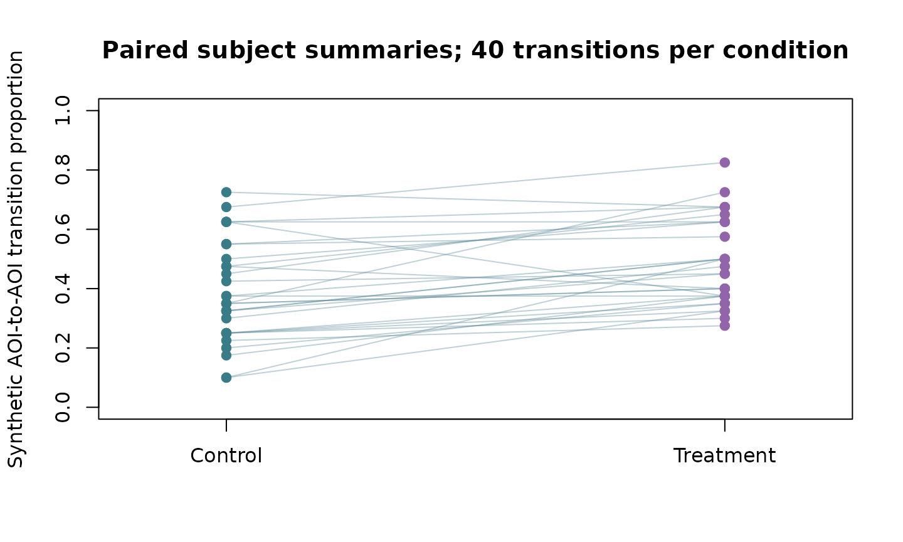
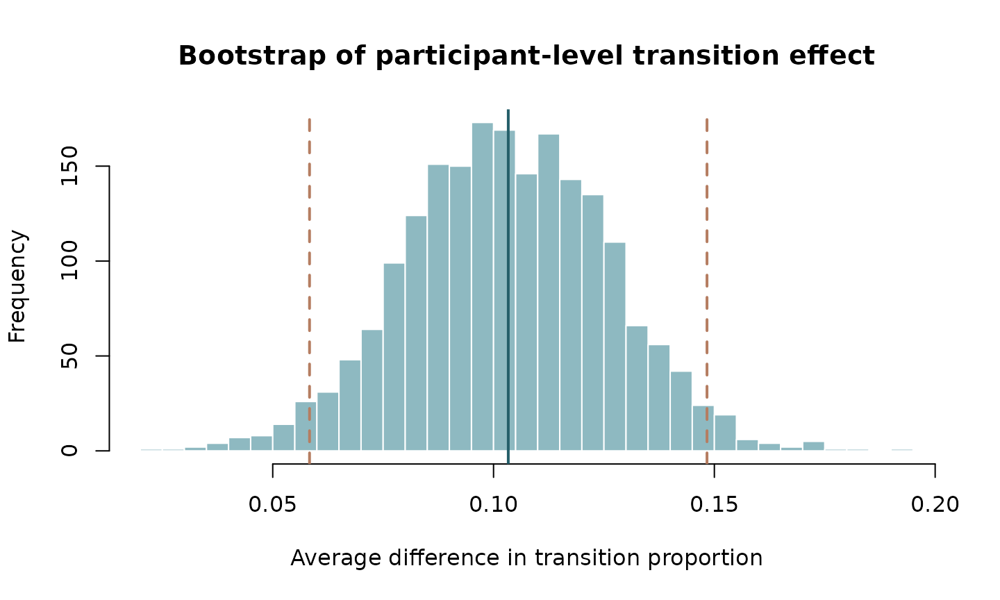

Effect-size visualizations for sequence analysis: design boundaries
Source:vignettes/estimation-visualization-boundaries.Rmd
estimation-visualization-boundaries.RmdDABEST estimation plots make sense for scalar outcomes extracted from ordered sequences, such as participant-level transition probability, dwell fraction or entropy under explicitly declared exposure denominators. They do not justify treating transitions from the same participant as independent observations.
Use the maintained R dabestr package directly to show a Gardner–Altman or Cumming plot if a scalar participant-level mean difference is the scientific target. For a paired design use the same person in both groups and a paired resampling contract.
For time-varying transitions, HMM state probabilities, scanpath
distances and repeated trials, retain the current
plot_sequence_group_inference,
plot_time_varying_sequence_model, and other
estimator-specific uncertainty visualizations. Generic raw mean
differences cannot reproduce their temporal, compositional or
hierarchical estimands.
This article adds no speculative sequence estimator and does not modify the published package public namespace.
Rendered scalar sequence-effect illustration (synthetic)
For a prespecified participant-level transition-proportion estimand, a paired effect plot can be useful. The individual transitions within participants must not be treated as independent observations.
set.seed(20261009)
n <- 30L
latent <- stats::rbeta(n, 8, 12)
control <- stats::rbinom(n, size = 40, prob = latent) / 40
treatment <- stats::rbinom(
n, size = 40, prob = pmin(latent + .10, .95)
) / 40
graphics::plot(
NA, xlim = c(.8, 2.2), ylim = c(0, 1), xaxt = "n",
xlab = "", ylab = "Synthetic AOI-to-AOI transition proportion",
main = "Paired subject summaries; 40 transitions per condition"
)
graphics::axis(1, at = 1:2, labels = c("Control", "Treatment"))
graphics::segments(
1, control, 2, treatment,
col = grDevices::adjustcolor("#608B9A", alpha.f = .4)
)
graphics::points(rep(1, n), control, pch = 19, col = "#387C88")
graphics::points(rep(2, n), treatment, pch = 19, col = "#9265AA")
effect <- treatment - control
draws <- replicate(
2000L, mean(sample(effect, size = length(effect), replace = TRUE))
)
interval <- stats::quantile(draws, c(.025, .975))
graphics::hist(
draws, breaks = 25, col = "#8EB9C1", border = "white",
main = "Bootstrap of participant-level transition effect",
xlab = "Average difference in transition proportion"
)
graphics::abline(v = 0, lty = 3)
graphics::abline(v = mean(effect), col = "#245E69", lwd = 2)
graphics::abline(v = interval, col = "#B57D61", lty = 2, lwd = 2)
These are illustrative synthetic outcomes, not fitted sequence-model results. For time-dependent transition probabilities, hidden states, Markov dependence, exposure denominators or serially correlated repeated trials, the scalar paired bootstrap may be the wrong estimand. Use validated model-specific hierarchical and temporal uncertainty outputs.